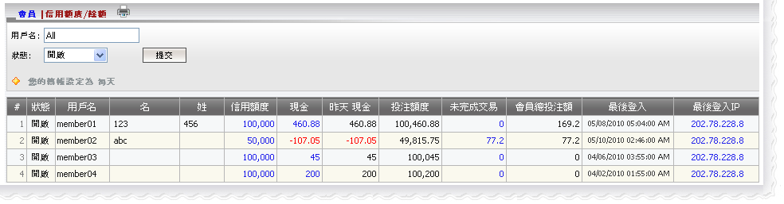

信用額度/餘額
定義:
這個功能顯示所有會員的信用額度及餘額的必要信息, 例如:
- 狀態: 開啟, 關閉或暫停
- 信用額度: 代理給予的總會員信用額度
- 現金: 截至今日的總輸贏數額
- 昨日 現金: 截至昨日的總輸贏額
- 投注額度: 會員可用於投注的總信用額數
- 未完成交易: 仍在進行中註單的總投注額
- 會員總投注交易: 仍在進行中和已結算注單的總投注額
此外, 這個功能也讓代理進行以下子功能:
- 點擊信用額度數額便可增加或減少給予會員的信用額度
- 點擊昨日現金便可進行轉賬
- 點擊未完成交易數額, 以查看投注歷史及每日賬目

信用額度/餘額